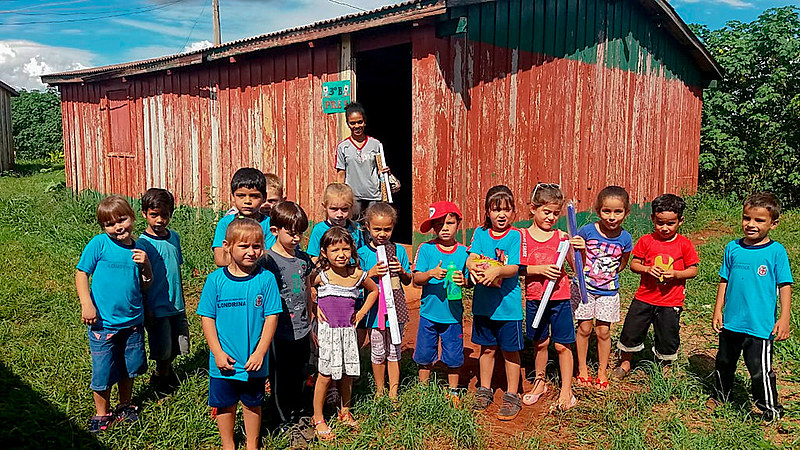

Sobre Nós
O site "Ajuda para agricultores de Baixa Renda" tem como objetivo principal apoiar e empoderar agricultores e Agricultores que enfrentam desafios econômicos. A plataforma se dedica a oferecer recursos valiosos, como informações sobre programas de subsídio, oportunidades de microfinanciamento, práticas agrícolas sustentáveis e técnicas de aumento de produtividade com baixo custo. Além disso, o site visa criar uma comunidade solidária onde os agricultores podem trocar experiências, obter aconselhamento especializado e acessar materiais educativos que promovam a autonomia e a melhoria de suas condições de vida.